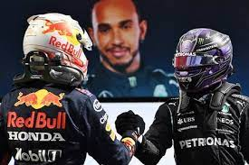
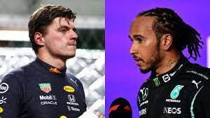
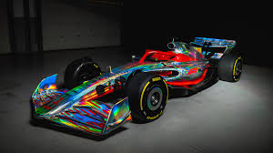
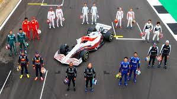

La rivalidad entre lewis y max lleo al siguiente nivel y eso hara que bottas y checo pelearan
por el campeonato de constructores.
yo opino lo mismo, la rivalidad entre max y lewis es muy fuerte los dos pilotos en varias
ocasiones ya an chocado y todo por no dejarse pasar uno al otro, la rivalidad entre ellos
dos a llevado a afectar a sus equipos y eso es malo.
Investigación
Informacion
23/01/22
Sus familias y relaciones
Familia de Lewis Hamilton:Carmen Larbalestier y Anthony Hamilton papas. Nicolas,
Samantha y Nicolas Hamilton son sus hermanos. Nicole Scherzinger es su novia.
Familia de Max Verstappen:Jos Verstappen y Sophie Kumpen son sus papas. Victoria
Jane Verstappen es su hermana.Penélope es su hija. Kelly Piquet es su novia.
Equipos en los que han estado
Lewis Hamilton:Mclaren y Mercedes
Max Verstappen:Toro Rosso y Red Bull
The way I drive, the way I handle a car, is an expression of my inner feelings.
Lewis Hamilton
Mistakes happen, and they happen to the best of us.
Max Verstappen
¿Porque se salieron de sus equpios viejos.
Max Verstappen se salio de Toro Rosso porquesimplemente Red bull la
compro.
Lewis Hamilton se salio de Mclaren porque Mercedes tiene mejor tecnología, como
es los "Flappers" que redireccionan el aire para darle o quitarle peso al coche y
esto lo puede hacer que vaya mas rápido.
Edad y veces ganadas de Lewis Hamilton
Before you continue to Google Search. Retrieved 24 January 2022, from
ir a la informacion
Google Chrome
Before you continue to Google Search. Retrieved 24 January 2022, from
ir a la informacion
Google Chrome
Lewis Hamilton - Wikipedia, la enciclopedia libre. Retrieved 24 January 2022, from
Ir a la
informacion
Wikipedia
Max Verstappen - Wikipedia, la enciclopedia libre. Retrieved 24 January 2022, from
Ir a la
informacion
Wikipedia
Mas sobre Max y Lewis

Como Max y Lewis se van a pelear por el titulo a lo largo de la temporada.
16/02/22
Esto es lo que paso en la temporada 2021-2022, tenemos a Max como el nuevo campeon y a
Lewis muy indignado.
En esta entrada no use ninguna página de referencia.
Choques mas polémicos

Estos son los choques más polémicos de Max Verstappen y Lewis Hamilton.
04/04/22
Estos choques fueron en la temporada 2021 en la carrera de Silver stone y Monza.
FORMUL1 1. (2021). Verstappen & Hamilton Clash at Monza | 2021 Italian Grand Prix [Video].
Retrieved from https://www.youtube.com/watch?v=_VSwwZYDW94
FORMULA 1. (2021). Verstappen & Hamilton Collide At Silverstone | 2021 British Grand Prix
[Video]. Retrieved from https://www.youtube.com/watch?v=oIKel6jVD3Q
Formula 1
7/jun/22

Formula 1 2022
La formula 1 es un deporte elegante y se caracteriz por ser muy caro,
como ya e explicado en este blog al principio del año cada escuderia crea
su monoplaza y al ser un deporte que requiere un coche que valla a 300k/h
se requiere el mejor equipo para diseñar el monoplaza a base de las espesificaciones
de la FIA es por eso que la formula 1 es tan costosa.
Creadores, Escuderias y Pilotos
7/jun/22

Pilotos F1 2022
Bernie Ecclestone este hombre creo la formula 1
en 1972 fundo la Asociación de Constructores de Fórmula 1
Son los directores de cada escuderia
RedBull: Christian Horner
Mercedes: Toto Wolff
Ferrari: Mattia Binotto
Haas Ferrari: Guenther steiner
Aston martin: Otmar Szafnauer
Mclaren: Zack Brown
Alpine: Laurent Rossi
Alfa Romeo: Frederic Vasseur
Williams:Jost Capito
Alphatauri: Graham Watson
Aquí estan todos los directores generales de cada escuderia de la Formula 1
 La rivalidad de lewis y max en la f1
La rivalidad de lewis y max en la f1